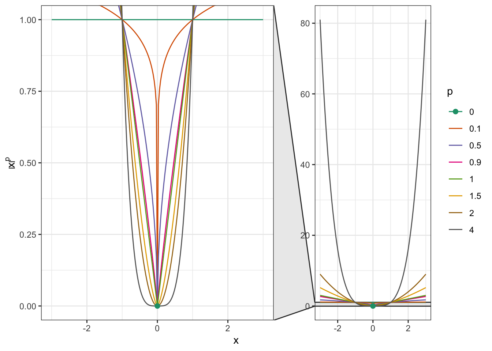

[31m
processing file: notes.qmd
[39m
|
| | 0%
|
|................. | 33%
|
|................................... | 67% [unnamed-chunk-1]
|
|....................................................| 100% [31mRows: 40 Columns: 6
[39m[31m── Column specification ────────────────────────────────────────────────────────
Delimiter: ","
chr (4): Day of Week, Item, Details, Suggested Reading
dbl (1): Number
date (1): Date
[39m[31m
ℹ Use `spec()` to retrieve the full column specification for this data.
ℹ Specify the column types or set `show_col_types = FALSE` to quiet this message.
[39m[31mRows: 40 Columns: 6
[39m[31m── Column specification ────────────────────────────────────────────────────────
Delimiter: ","
chr (4): Day of Week, Item, Details, Suggested Reading
dbl (1): Number
date (1): Date
[39m[31m
ℹ Use `spec()` to retrieve the full column specification for this data.
ℹ Specify the column types or set `show_col_types = FALSE` to quiet this message.
[39m[31mRows: 40 Columns: 6
[39m[31m── Column specification ────────────────────────────────────────────────────────
Delimiter: ","
chr (4): Day of Week, Item, Details, Suggested Reading
dbl (1): Number
date (1): Date
[39m[31m
ℹ Use `spec()` to retrieve the full column specification for this data.
ℹ Specify the column types or set `show_col_types = FALSE` to quiet this message.
[39m[31mRows: 40 Columns: 6
[39m[31m── Column specification ────────────────────────────────────────────────────────
Delimiter: ","
chr (4): Day of Week, Item, Details, Suggested Reading
dbl (1): Number
date (1): Date
[39m[31m
ℹ Use `spec()` to retrieve the full column specification for this data.
ℹ Specify the column types or set `show_col_types = FALSE` to quiet this message.
[39m[31mRows: 40 Columns: 6
[39m[31m── Column specification ────────────────────────────────────────────────────────
Delimiter: ","
chr (4): Day of Week, Item, Details, Suggested Reading
dbl (1): Number
date (1): Date
[39m[31m
ℹ Use `spec()` to retrieve the full column specification for this data.
ℹ Specify the column types or set `show_col_types = FALSE` to quiet this message.
[39m[31mRows: 40 Columns: 6
[39m[31m── Column specification ────────────────────────────────────────────────────────
Delimiter: ","
chr (4): Day of Week, Item, Details, Suggested Reading
dbl (1): Number
date (1): Date
[39m[31m
ℹ Use `spec()` to retrieve the full column specification for this data.
ℹ Specify the column types or set `show_col_types = FALSE` to quiet this message.
[39m[31mRows: 40 Columns: 6
[39m[31m── Column specification ────────────────────────────────────────────────────────
Delimiter: ","
chr (4): Day of Week, Item, Details, Suggested Reading
dbl (1): Number
date (1): Date
[39m[31m
ℹ Use `spec()` to retrieve the full column specification for this data.
ℹ Specify the column types or set `show_col_types = FALSE` to quiet this message.
[39m[31mRows: 40 Columns: 6
[39m[31m── Column specification ────────────────────────────────────────────────────────
Delimiter: ","
chr (4): Day of Week, Item, Details, Suggested Reading
dbl (1): Number
date (1): Date
[39m[31m
ℹ Use `spec()` to retrieve the full column specification for this data.
ℹ Specify the column types or set `show_col_types = FALSE` to quiet this message.
[39m[31mRows: 40 Columns: 6
[39m[31m── Column specification ────────────────────────────────────────────────────────
Delimiter: ","
chr (4): Day of Week, Item, Details, Suggested Reading
dbl (1): Number
date (1): Date
[39m[31m
ℹ Use `spec()` to retrieve the full column specification for this data.
ℹ Specify the column types or set `show_col_types = FALSE` to quiet this message.
[39m[31mRows: 40 Columns: 6
[39m[31m── Column specification ────────────────────────────────────────────────────────
Delimiter: ","
chr (4): Day of Week, Item, Details, Suggested Reading
dbl (1): Number
date (1): Date
[39m[31m
ℹ Use `spec()` to retrieve the full column specification for this data.
ℹ Specify the column types or set `show_col_types = FALSE` to quiet this message.
[39m[31mRows: 40 Columns: 6
[39m[31m── Column specification ────────────────────────────────────────────────────────
Delimiter: ","
chr (4): Day of Week, Item, Details, Suggested Reading
dbl (1): Number
date (1): Date
[39m[31m
ℹ Use `spec()` to retrieve the full column specification for this data.
ℹ Specify the column types or set `show_col_types = FALSE` to quiet this message.
[39m[31mRows: 40 Columns: 6
[39m[31m── Column specification ────────────────────────────────────────────────────────
Delimiter: ","
chr (4): Day of Week, Item, Details, Suggested Reading
dbl (1): Number
date (1): Date
[39m[31m
ℹ Use `spec()` to retrieve the full column specification for this data.
ℹ Specify the column types or set `show_col_types = FALSE` to quiet this message.
[39m[31mRows: 40 Columns: 6
[39m[31m── Column specification ────────────────────────────────────────────────────────
Delimiter: ","
chr (4): Day of Week, Item, Details, Suggested Reading
dbl (1): Number
date (1): Date
[39m[31m
ℹ Use `spec()` to retrieve the full column specification for this data.
ℹ Specify the column types or set `show_col_types = FALSE` to quiet this message.
[39m[31mRows: 40 Columns: 6
[39m[31m── Column specification ────────────────────────────────────────────────────────
Delimiter: ","
chr (4): Day of Week, Item, Details, Suggested Reading
dbl (1): Number
date (1): Date
[39m[31m
ℹ Use `spec()` to retrieve the full column specification for this data.
ℹ Specify the column types or set `show_col_types = FALSE` to quiet this message.
[39m[31mRows: 40 Columns: 6
[39m[31m── Column specification ────────────────────────────────────────────────────────
Delimiter: ","
chr (4): Day of Week, Item, Details, Suggested Reading
dbl (1): Number
date (1): Date
[39m[31m
ℹ Use `spec()` to retrieve the full column specification for this data.
ℹ Specify the column types or set `show_col_types = FALSE` to quiet this message.
[39m[31mRows: 40 Columns: 6
[39m[31m── Column specification ────────────────────────────────────────────────────────
Delimiter: ","
chr (4): Day of Week, Item, Details, Suggested Reading
dbl (1): Number
date (1): Date
[39m[31m
ℹ Use `spec()` to retrieve the full column specification for this data.
ℹ Specify the column types or set `show_col_types = FALSE` to quiet this message.
[39m[31mRows: 40 Columns: 6
[39m[31m── Column specification ────────────────────────────────────────────────────────
Delimiter: ","
chr (4): Day of Week, Item, Details, Suggested Reading
dbl (1): Number
date (1): Date
[39m[31m
ℹ Use `spec()` to retrieve the full column specification for this data.
ℹ Specify the column types or set `show_col_types = FALSE` to quiet this message.
[39m[31mRows: 40 Columns: 6
[39m[31m── Column specification ────────────────────────────────────────────────────────
Delimiter: ","
chr (4): Day of Week, Item, Details, Suggested Reading
dbl (1): Number
date (1): Date
[39m[31m
ℹ Use `spec()` to retrieve the full column specification for this data.
ℹ Specify the column types or set `show_col_types = FALSE` to quiet this message.
[39m[31mRows: 40 Columns: 6
[39m[31m── Column specification ────────────────────────────────────────────────────────
Delimiter: ","
chr (4): Day of Week, Item, Details, Suggested Reading
dbl (1): Number
date (1): Date
[39m[31m
ℹ Use `spec()` to retrieve the full column specification for this data.
ℹ Specify the column types or set `show_col_types = FALSE` to quiet this message.
[39m[31mRows: 40 Columns: 6
[39m[31m── Column specification ────────────────────────────────────────────────────────
Delimiter: ","
chr (4): Day of Week, Item, Details, Suggested Reading
dbl (1): Number
date (1): Date
[39m[31m
ℹ Use `spec()` to retrieve the full column specification for this data.
ℹ Specify the column types or set `show_col_types = FALSE` to quiet this message.
[39m[31mRows: 40 Columns: 6
[39m[31m── Column specification ────────────────────────────────────────────────────────
Delimiter: ","
chr (4): Day of Week, Item, Details, Suggested Reading
dbl (1): Number
date (1): Date
[39m[31m
ℹ Use `spec()` to retrieve the full column specification for this data.
ℹ Specify the column types or set `show_col_types = FALSE` to quiet this message.
[39m[31mRows: 40 Columns: 6
[39m[31m── Column specification ────────────────────────────────────────────────────────
Delimiter: ","
chr (4): Day of Week, Item, Details, Suggested Reading
dbl (1): Number
date (1): Date
[39m[31m
ℹ Use `spec()` to retrieve the full column specification for this data.
ℹ Specify the column types or set `show_col_types = FALSE` to quiet this message.
[39m[31mRows: 40 Columns: 6
[39m[31m── Column specification ────────────────────────────────────────────────────────
Delimiter: ","
chr (4): Day of Week, Item, Details, Suggested Reading
dbl (1): Number
date (1): Date
[39m[31m
ℹ Use `spec()` to retrieve the full column specification for this data.
ℹ Specify the column types or set `show_col_types = FALSE` to quiet this message.
[39m[31mRows: 40 Columns: 6
[39m[31m── Column specification ────────────────────────────────────────────────────────
Delimiter: ","
chr (4): Day of Week, Item, Details, Suggested Reading
dbl (1): Number
date (1): Date
[39m[31m
ℹ Use `spec()` to retrieve the full column specification for this data.
ℹ Specify the column types or set `show_col_types = FALSE` to quiet this message.
[39m[31mRows: 40 Columns: 6
[39m[31m── Column specification ────────────────────────────────────────────────────────
Delimiter: ","
chr (4): Day of Week, Item, Details, Suggested Reading
dbl (1): Number
date (1): Date
[39m[31m
ℹ Use `spec()` to retrieve the full column specification for this data.
ℹ Specify the column types or set `show_col_types = FALSE` to quiet this message.
[39m[31mRows: 40 Columns: 6
[39m[31m── Column specification ────────────────────────────────────────────────────────
Delimiter: ","
chr (4): Day of Week, Item, Details, Suggested Reading
dbl (1): Number
date (1): Date
[39m[31m
ℹ Use `spec()` to retrieve the full column specification for this data.
ℹ Specify the column types or set `show_col_types = FALSE` to quiet this message.
[39m[31mRows: 40 Columns: 6
[39m[31m── Column specification ────────────────────────────────────────────────────────
Delimiter: ","
chr (4): Day of Week, Item, Details, Suggested Reading
dbl (1): Number
date (1): Date
[39m[31m
ℹ Use `spec()` to retrieve the full column specification for this data.
ℹ Specify the column types or set `show_col_types = FALSE` to quiet this message.
[39m[31mRows: 40 Columns: 6
[39m[31m── Column specification ────────────────────────────────────────────────────────
Delimiter: ","
chr (4): Day of Week, Item, Details, Suggested Reading
dbl (1): Number
date (1): Date
[39m[31m
ℹ Use `spec()` to retrieve the full column specification for this data.
ℹ Specify the column types or set `show_col_types = FALSE` to quiet this message.
[39m[31mRows: 40 Columns: 6
[39m[31m── Column specification ────────────────────────────────────────────────────────
Delimiter: ","
chr (4): Day of Week, Item, Details, Suggested Reading
dbl (1): Number
date (1): Date
[39m[31m
ℹ Use `spec()` to retrieve the full column specification for this data.
ℹ Specify the column types or set `show_col_types = FALSE` to quiet this message.
[39m[31mRows: 40 Columns: 6
[39m[31m── Column specification ────────────────────────────────────────────────────────
Delimiter: ","
chr (4): Day of Week, Item, Details, Suggested Reading
dbl (1): Number
date (1): Date
[39m[31m
ℹ Use `spec()` to retrieve the full column specification for this data.
ℹ Specify the column types or set `show_col_types = FALSE` to quiet this message.
[39m[31mRows: 40 Columns: 6
[39m[31m── Column specification ────────────────────────────────────────────────────────
Delimiter: ","
chr (4): Day of Week, Item, Details, Suggested Reading
dbl (1): Number
date (1): Date
[39m[31m
ℹ Use `spec()` to retrieve the full column specification for this data.
ℹ Specify the column types or set `show_col_types = FALSE` to quiet this message.
[39m[31mRows: 40 Columns: 6
[39m[31m── Column specification ────────────────────────────────────────────────────────
Delimiter: ","
chr (4): Day of Week, Item, Details, Suggested Reading
dbl (1): Number
date (1): Date
[39m[31m
ℹ Use `spec()` to retrieve the full column specification for this data.
ℹ Specify the column types or set `show_col_types = FALSE` to quiet this message.
[39m[31mRows: 40 Columns: 6
[39m[31m── Column specification ────────────────────────────────────────────────────────
Delimiter: ","
chr (4): Day of Week, Item, Details, Suggested Reading
dbl (1): Number
date (1): Date
[39m[31m
ℹ Use `spec()` to retrieve the full column specification for this data.
ℹ Specify the column types or set `show_col_types = FALSE` to quiet this message.
[39m[31mRows: 40 Columns: 6
[39m[31m── Column specification ────────────────────────────────────────────────────────
Delimiter: ","
chr (4): Day of Week, Item, Details, Suggested Reading
dbl (1): Number
date (1): Date
[39m[31m
ℹ Use `spec()` to retrieve the full column specification for this data.
ℹ Specify the column types or set `show_col_types = FALSE` to quiet this message.
[39m[31mRows: 40 Columns: 6
[39m[31m── Column specification ────────────────────────────────────────────────────────
Delimiter: ","
chr (4): Day of Week, Item, Details, Suggested Reading
dbl (1): Number
date (1): Date
[39m[31m
ℹ Use `spec()` to retrieve the full column specification for this data.
ℹ Specify the column types or set `show_col_types = FALSE` to quiet this message.
[39m[31mRows: 40 Columns: 6
[39m[31m── Column specification ────────────────────────────────────────────────────────
Delimiter: ","
chr (4): Day of Week, Item, Details, Suggested Reading
dbl (1): Number
date (1): Date
[39m[31m
ℹ Use `spec()` to retrieve the full column specification for this data.
ℹ Specify the column types or set `show_col_types = FALSE` to quiet this message.
[39m[31mRows: 40 Columns: 6
[39m[31m── Column specification ────────────────────────────────────────────────────────
Delimiter: ","
chr (4): Day of Week, Item, Details, Suggested Reading
dbl (1): Number
date (1): Date
[39m[31m
ℹ Use `spec()` to retrieve the full column specification for this data.
ℹ Specify the column types or set `show_col_types = FALSE` to quiet this message.
[39m[31mRows: 40 Columns: 6
[39m[31m── Column specification ────────────────────────────────────────────────────────
Delimiter: ","
chr (4): Day of Week, Item, Details, Suggested Reading
dbl (1): Number
date (1): Date
[39m[31m
ℹ Use `spec()` to retrieve the full column specification for this data.
ℹ Specify the column types or set `show_col_types = FALSE` to quiet this message.
[39m[31mRows: 40 Columns: 6
[39m[31m── Column specification ────────────────────────────────────────────────────────
Delimiter: ","
chr (4): Day of Week, Item, Details, Suggested Reading
dbl (1): Number
date (1): Date
[39m[31m
ℹ Use `spec()` to retrieve the full column specification for this data.
ℹ Specify the column types or set `show_col_types = FALSE` to quiet this message.
[39m[31mRows: 40 Columns: 6
[39m[31m── Column specification ────────────────────────────────────────────────────────
Delimiter: ","
chr (4): Day of Week, Item, Details, Suggested Reading
dbl (1): Number
date (1): Date
[39m[31m
ℹ Use `spec()` to retrieve the full column specification for this data.
ℹ Specify the column types or set `show_col_types = FALSE` to quiet this message.
[39m[31mRows: 40 Columns: 6
[39m[31m── Column specification ────────────────────────────────────────────────────────
Delimiter: ","
chr (4): Day of Week, Item, Details, Suggested Reading
dbl (1): Number
date (1): Date
[39m[31m
ℹ Use `spec()` to retrieve the full column specification for this data.
ℹ Specify the column types or set `show_col_types = FALSE` to quiet this message.
[39m[31mRows: 40 Columns: 6
[39m[31m── Column specification ────────────────────────────────────────────────────────
Delimiter: ","
chr (4): Day of Week, Item, Details, Suggested Reading
dbl (1): Number
date (1): Date
[39m[31m
ℹ Use `spec()` to retrieve the full column specification for this data.
ℹ Specify the column types or set `show_col_types = FALSE` to quiet this message.
[39m[31mRows: 40 Columns: 6
[39m[31m── Column specification ────────────────────────────────────────────────────────
Delimiter: ","
chr (4): Day of Week, Item, Details, Suggested Reading
dbl (1): Number
date (1): Date
[39m[31m
ℹ Use `spec()` to retrieve the full column specification for this data.
ℹ Specify the column types or set `show_col_types = FALSE` to quiet this message.
[39m[31mRows: 40 Columns: 6
[39m[31m── Column specification ────────────────────────────────────────────────────────
Delimiter: ","
chr (4): Day of Week, Item, Details, Suggested Reading
dbl (1): Number
date (1): Date
[39m[31m
ℹ Use `spec()` to retrieve the full column specification for this data.
ℹ Specify the column types or set `show_col_types = FALSE` to quiet this message.
[39m[31mRows: 40 Columns: 6
[39m[31m── Column specification ────────────────────────────────────────────────────────
Delimiter: ","
chr (4): Day of Week, Item, Details, Suggested Reading
dbl (1): Number
date (1): Date
[39m[31m
ℹ Use `spec()` to retrieve the full column specification for this data.
ℹ Specify the column types or set `show_col_types = FALSE` to quiet this message.
[39m
[31moutput file: notes.knit.md
[39m[1mpandoc [22m
to: html
output-file: notes.html
standalone: true
title-prefix: STAT 3106
section-divs: true
html-math-method: mathjax
wrap: none
default-image-extension: png
toc: true
email-obfuscation: javascript
[1mmetadata[22m
document-css: false
link-citations: true
date-format: long
lang: en
editor:
mode: source
theme: darkly
margin-left: 0em
code-copy: true
toc_depth: 5
toc-location: left
page-layout: full
title: 'STAT 3106 - Handouts and Additional Notes'
aliases:
- ./notes/index.html
date: '`r Sys.Date()`'
Output created: docs/notes.htmlNotes for Lecture #09: Unit II. Regression: Regularization Methods for Model Selection
Outline:
- Model Selection & Sparsity
- Why?
- Classical Methods
- Regularization Methods
- Lasso Demo
- CV
- Regularization Paths
Recall that last time we introduced the concept of ridge regression:
\[\argmin_{\bbeta} \frac{1}{2n}\sum_{i=1}^n (y_i - \bx_i^{\top}\bbeta)^2 + \frac{\lambda}{2} \|\beta\|_2^2\]
(Remember: the extra \(1/2\) factors here don’t really make a difference when we’re only interested in the minimizer and they make doing ‘calculus things’ a bit cleaner: \(\frac{d}{dx}\frac{x^2}{2} = x\).)
This was an extension to our basic ERM principle: we don’t just match the training data as well as we can (OLS would dominate on that task) but we do so while keeping our set of \(\bbeta\) coefficients from getting too big. Our goal is not ‘small coefficients’ per se, but small coefficients lead to better generalizability (out of sample performance):
- Our model is less sensitive to inputs at both the fitting and prediction stage.
- At fitting, we keep out values from getting too big, so the influence from any single observation is reduced. (Compare to ‘normal’ regression where one observation can have essentially unbounded influence / leverage.)
- At prediction, if our coefficients are smaller, a change to one of the input \(x_i\) gives a smaller change in the output \(\hat{y}\)
- Due to the statistical ‘magic’ of shrinkage, at least a little bit of ridge penalization always helps. (In practice, our theory only holds for ‘infinitely small’ shrinkage, but we find that an appropriately CV-tuned \(\lambda\) is often not that small.)
We motivated this idea from the intuition that it is impossible for all features to be super important (the chaotic piranha principle), but this wasn’t actually mathematically necessary. (I personally believe it is an important aspect of ridge’s practical successes.)
Let’s take a closer look at what that ridge solution actually looks like. A little bit of matrix calculus (which you aren’t required to reproduce) tells us that the solution looks like:
\[\hat{\bbeta}_{\lambda} = (\bX^{\top}\bX + \lambda \bI)^{-1}\bX^{\top}\by\]
Contrast this to ‘normal’ OLS which has the following matrix form:
\[\hat{\bbeta}_{\lambda} = (\bX^{\top}\bX)^{-1}\bX^{\top}\by\]
If you recall your formulas for simple (univariate regression), the OLS slope is given by something like \[SS_{XY}/SS_{XX}\] and the matrix form above just generalizes this to multiple features. Here \(\bX^{\top}\bX\) plays the role of \(SS_{XX}\) and \(\bX^{\top}\by\) and \(\bX^{\top}\by\) plays the role of \(SS_{XY}\). (We can’t ‘divide’ by matrices, but it’s fine to multiply by the inverse of \(\bX^{\top}\bX\); essentially, if we couldn’t divide by 3, we can multiply by \(1/3\) to get to the same end result.)
Extrapolating this analogy: the ridge solution looks something like: \(SS_{XY}/(SS_{XX} + \lambda)\). That is, we grow the denominator by \(\lambda\) and effectively ‘shrink’ the OLS solution closer to zero.1
In this form, we see that the \(\lambda \to 0\) limit gets us back to OLS, while the \(\lambda \to \infty\) limit pushes us all the way back down to zero.
Understanding Check: How does this relate to the behavior of \(\tau\) in the constraint form?
We see something else a bit magical about ridge regression here: because of the \(+\lambda\) term in the denominator, we avoid any division by zero problems. (Recall that \(\lambda\) is a price and is always positive.)
This is actually pretty magical and it means we can fit ridge regression even in the ‘wide’ data setting where \(p > n\)! Hence, even if we have more measurements than samples, we can fit something ‘OLS-like’. Of course, it isn’t “true” OLS since we have the ridge penalty, but if \(\lambda\) isn’t too big, it’s basically the same thing.
This is incredibly important in fields where getting additional measurements (\(p\)) is cost effective, but getting additional samples (\(n\)) is expensive. Think medical trials, consumer tracking, weather and climate monitoring (after you’ve bought and installed your weather monitor, letting it run for a longer period is cheap; buying a new one and paying someone to install it is expensive) and many more.
So what does a ridge regression solution actually look like in that situation?
Loading required package: Matrix
Attaching package: 'Matrix'The following objects are masked from 'package:tidyr':
expand, pack, unpackLoaded glmnet 5.1# 1. Ingest static TidyTuesday snapshot
raw_wine <- read_csv(
"https://raw.githubusercontent.com/rfordatascience/tidytuesday/main/data/2019/2019-05-28/winemag-data-130k-v2.csv",
show_col_types = FALSE
)New names:
• `` -> `...1`# 2. Subsample to create a controlled p > n setting (n = 100)
set.seed(9750)
wine_sample <- raw_wine |>
filter(variety == "Pinot Noir", !is.na(points), !is.na(description)) |>
slice_sample(n = 100) |>
mutate(wine_id = row_number()) |>
select(wine_id, points, description)
# 3. Tokenize, strip stopwords/digits, and prune singletons
tidy_words <- wine_sample |>
unnest_tokens(word, description) |>
anti_join(stop_words, by = "word") |>
filter(!str_detect(word, "^[0-9]+$"))
frequent_words <- tidy_words |>
distinct(wine_id, word) |>
count(word) |>
filter(n >= 2)
# 4. Reshape to wide DTM via pivot_wider()
dtm <- tidy_words |>
semi_join(frequent_words, by = "word") |>
count(wine_id, word) |>
pivot_wider(
names_from = word,
values_from = n,
values_fill = 0
)
# 5. Build design matrix X and continuous target y
aligned <- wine_sample |>
select(wine_id, points) |>
inner_join(dtm, by = "wine_id")
X <- aligned |> select(-wine_id, -points) |> as.matrix()
y <- aligned$points
dim(X)[1] 100 338Here we have a data set with \(n = 100\) rows corresponding to reviews of different bottles of wine and \(p > n\) words used within those reviews. Our outcome \(Y\) is the rating (on a 0-100 scale) given to each bottle.
The glmnet package will let us fit ridge regression easily:
Loading required package: Matrix
Attaching package: 'Matrix'The following objects are masked from 'package:tidyr':
expand, pack, unpackLoaded glmnet 5.1339 x 1 sparse Matrix of class "dgCMatrix"
s0
(Intercept) 87.747366670
acidity 0.443106474
ava 0.634053362
black 0.256059430
blue 0.528156086
compact 0.487291259
decades 0.778073727
firm 0.236546198
fruits 0.025659220
gun 0.467653081
life 0.655457152
light 0.118565002
metal 0.453697736
peppery 0.061635733
streak 0.317941132
tannins 0.046927874
tight -0.107057020
wine 0.056133114
wines 0.642681272
block 0.839620283
cherry 0.102030498
chocolate 0.617043362
clone 0.646482504
core 0.099378139
cranberry 0.298091248
dark 0.376794496
estate 0.351269270
finish -0.134868085
found 0.514550066
glass 0.437721304
grown -0.134199966
lush 0.686638660
marks 0.609022316
orange 0.819927892
pinot -0.016187950
spicy 0.525960199
strawberry 0.010673023
vintage 0.566675842
blast 0.293422281
cellar 0.685719006
cherries 0.076804190
complexities 0.195396478
earthy -0.199658820
enormous 0.925962084
fruit 0.194106420
hit 0.400446726
makes 0.376729832
mouth 0.221741772
raspberries 0.280006711
acre 0.218179072
additional 0.353717655
aromas -0.326619059
bright 0.466721002
grenadine -0.942852309
hints -0.194280172
lavender 0.132902176
pepper 0.415293707
violets 0.120895211
white 0.375727891
complex 0.602396830
cru 0.538543704
dense 0.387672467
drink 0.377135904
future 0.932576469
generous 0.512787855
grand 0.538990297
powerful 0.819995747
rich 0.355690269
saint 0.067484392
vineyards 0.163378894
balance 0.425459658
body 0.604175743
earth -0.047313829
flavors -0.086456769
forest 0.256273196
graceful 0.096797772
intense 0.181979202
pine 0.279061204
strawberries 0.141769937
suggest 0.198159352
texture -0.038866199
adds 0.505124342
aroma 0.741768432
bodied -0.384201064
medium -0.330664457
mild -0.595188265
nice 1.081804511
note 0.259296678
oak 0.278450050
plum 0.113113994
red -0.028149375
ripe 0.413785082
smooth -0.480577727
ample 0.336410673
bottle -0.170110414
effort 0.279803493
focused 0.299550605
lightly 0.278724855
spiced 0.346679747
tart 0.229962003
balanced 0.081156080
berry 0.448358377
concentrated 0.384743453
dry -0.245624648
fresh -0.232639376
luscious 0.315134408
palate -0.085683018
price -0.235484834
round 0.527972928
watermelon -0.243512137
cinnamon 0.271719001
cola 0.096538174
delicious 0.496790212
expression 0.069820202
floor 0.941971764
intriguing 0.468234744
juicy 0.501740920
offers 0.046214833
structured -0.035974936
succulent 0.283047462
tea -0.082106799
velvety 0.620898682
waves -0.058069858
crisp -0.289626061
earthiness -0.925080822
finishing 0.802929853
mushroom 0.338503726
savory 0.420155901
alcohol -0.341678810
develop 0.806004642
fades 0.305165120
fine 0.129551620
hard 0.047067939
low 0.338672221
raspberry -0.125786930
sweet -0.129885892
tannic 0.355398806
character -0.278500365
developing 0.287147841
fruity -0.125674208
structure 0.385357147
elements 0.094994025
ground 0.488168696
length 0.246561647
natural 0.217523330
providing 0.619421143
varietal -0.198327852
bottling 0.005423317
county -0.407273702
exotic -0.491436959
lots 0.128353422
notes -0.267345366
petals 0.511763955
pomegranate 0.231435985
rose 0.533473849
sandalwood 0.408758275
spice 0.186387909
tangy 0.402838150
vineyard 0.209490971
acid 0.575891425
aging 0.730360903
bit 0.177369366
feels 0.528550257
heavy -0.201787345
jammy 0.986670550
mocha -0.108609774
tannin 0.706501257
baking 0.493140930
french -0.304465553
oaky -0.289948127
silky 0.131777571
spices 0.262367810
vanilla 0.155602214
noir -0.442321377
strong 0.769172869
mid -0.567059738
past -0.503595545
quickly -0.221594535
solid -0.499282070
char -0.450760894
lighter -0.259311969
wood -0.083477491
grip 0.028282882
lingering 0.309573962
nose 0.063992425
violet 0.315211118
appellation 0.653600884
barely 0.632006882
berries 0.240741103
blend 0.256717949
blossom 0.382380444
currant -0.569757717
producer 0.215117756
region -0.287892310
wild 0.198727435
drinking -0.015237146
grows -0.203798615
ready -0.093715601
warms -0.139860667
citrus -0.799764398
compelling 1.069359423
elegant 0.129253170
layers -0.712513874
vines 0.699336827
features 0.609163211
mouthfeel 0.468569540
mushrooms 0.270447954
widely -0.069335671
blackberry 0.192995066
crushed -0.238655178
dried 0.250702166
paste 0.102961515
refreshing -0.196335660
slightly 0.024207930
thyme -0.217699625
polished 0.089151134
supple 0.067847129
pleasant -2.041732434
smoke 0.800626975
sour -0.634395113
thins 0.343959295
whiff -0.341739069
color 0.194296566
rim 0.110140647
shadings 0.367320081
soft -0.236173852
subtle -0.442425093
taste 1.039684082
delicate 0.068292998
dusty 0.676605588
fun 1.455630198
evident 0.668789890
floral -0.767722489
petal 0.209315737
scents 0.168148567
sense 0.568274723
suggests -0.354032309
weight 0.409596731
wrapped 0.785584848
acids -0.852559019
california's 1.606321445
pinots 0.737991281
gentle 0.064170631
toast -0.022634664
tobacco -0.205682738
true -0.263972295
carries -0.258988301
mixes 0.398432382
moderate -0.219409415
inviting -0.096430420
layered 0.427695596
accents 0.174287339
anise 0.178457691
leaf 0.558573421
star 0.402663887
asian 0.282509366
designate -0.513287281
plenty -0.574274447
provide -0.601045233
textured 0.094240860
flat -1.447784812
flavor -0.619597835
mint -0.539758340
mix -1.101464869
offering -0.861053103
muted -0.458412298
tasting -0.833975146
hint 0.257950461
winemaker -0.224460984
bottlings 0.060534555
smoky 0.491379764
winery 0.471843548
brooding -0.219556399
grippy -0.725983914
robust -0.342171940
cracker -0.317192460
herb 0.250187728
pretty 0.255357796
baked -0.034833015
bittersweet -0.229954455
herbal -0.495787607
site -0.235902974
gracefully 0.602367835
including 0.387729504
mountain 0.122610994
persistent 0.140645191
touch 0.668874295
grapes 0.184662945
real -0.400624173
reward 0.425212371
grilled 0.024110198
coffee -1.119747725
profile 0.297058720
warm -0.472720129
pommard -0.270748033
typical 0.070111499
underneath 0.166483077
suave 0.079306845
filling -0.167144397
pie -0.269915310
raw -1.014097386
accented -0.328739344
hot 0.090524181
lead 0.342323343
short -0.870043355
clean -0.182415966
licorice 0.567991652
time -0.067851360
backdrop 0.924749628
clove -0.219663582
rhubarb 0.435053131
set 0.501472617
purple 0.480853962
chunky -1.035413751
feel -0.490352779
roasted -0.224486957
due -0.221517626
lean -0.209508506
veteran 0.392175509
mellow -0.297402242
apple -0.262876052
skins -0.269514055
equal 0.993146140
road 0.691419489
tomato -0.241438300
style 0.032750358
concentration 0.566902404
côte -0.001086929
de -0.001031986
shape -0.051716951
bite 0.499011448
ocean 0.448054347
wound 0.446837287
describe 1.442712685
flashy 0.961940397
zest 0.003247119
nuits -0.752140322
reveal 0.095418464
richness -0.484133564Ok - so we get a lot of nearly zero coefficients. What happens if we let \(\lambda\) get bigger?
339 x 1 sparse Matrix of class "dgCMatrix"
s0
(Intercept) 89.5047200335
acidity 0.0498003987
ava 0.0747844586
black 0.0472400196
blue 0.0731901982
compact 0.0863803294
decades 0.1390982372
firm 0.0369531648
fruits 0.0155579749
gun 0.0863798920
life 0.1262487626
light -0.0007019568
metal 0.0863792839
peppery 0.0237872303
streak 0.0138578364
tannins 0.0203034511
tight 0.0035456073
wine 0.0083630398
wines 0.1013000324
block 0.0935581637
cherry 0.0072570170
chocolate 0.0758000691
clone 0.0735368979
core 0.0125914621
cranberry 0.0347863568
dark 0.0477386937
estate 0.0424978576
finish -0.0258294752
found 0.0566737592
glass 0.0201100334
grown 0.0016437963
lush 0.0935541116
marks 0.0898298271
orange 0.0490344022
pinot -0.0025523804
spicy 0.0568395237
strawberry 0.0171749764
vintage 0.0568533749
blast -0.0376102486
cellar 0.0788601888
cherries 0.0183594950
complexities 0.0098990401
earthy -0.0372111123
enormous 0.0804747284
fruit 0.0299745794
hit 0.0186397733
makes -0.0010592025
mouth 0.0151335251
raspberries 0.0239957315
acre 0.0608013095
additional 0.0444578026
aromas -0.0464716323
bright 0.0164380135
grenadine -0.0781611541
hints -0.0081751882
lavender 0.0333578907
pepper 0.0367995482
violets -0.0037400826
white 0.0123233675
complex 0.0534994686
cru 0.1140556217
dense 0.0635093895
drink 0.0517167603
future 0.1146655575
generous 0.0535688933
grand 0.1127224363
powerful 0.0883211849
rich 0.0434198504
saint 0.0579378040
vineyards 0.0255589225
balance 0.0616027041
body 0.0916718682
earth 0.0124916644
flavors -0.0119704128
forest 0.0364585813
graceful 0.0222350469
intense 0.0153926915
pine 0.0139005811
strawberries 0.0161742651
suggest 0.0495472886
texture 0.0111433996
adds 0.0475596104
aroma 0.0982452765
bodied -0.0380701781
medium -0.0282282915
mild -0.0618239959
nice 0.0682250167
note 0.0149939003
oak 0.0245156254
plum 0.0204225951
red 0.0059028209
ripe 0.0495108585
smooth -0.0486281033
ample 0.0297472277
bottle -0.0289202596
effort 0.0205329267
focused 0.0474696365
lightly 0.0226029626
spiced 0.0552893082
tart 0.0204313337
balanced -0.0077095219
berry 0.0393201828
concentrated 0.0367945889
dry -0.0333303739
fresh -0.0357860761
luscious 0.0483952471
palate -0.0142354396
price -0.0185046185
round 0.0402717227
watermelon -0.0576124520
cinnamon 0.0412365704
cola 0.0135159056
delicious 0.0480828927
expression 0.0579109231
floor 0.0773169346
intriguing 0.0753840336
juicy 0.0709675013
offers 0.0115462135
structured 0.0404669742
succulent 0.0613292202
tea -0.0073936310
velvety 0.0780742538
waves 0.0575595838
crisp -0.0433575832
earthiness -0.0630997925
finishing -0.0001889437
mushroom -0.0079527304
savory -0.0061197237
alcohol -0.0214141093
develop 0.0794261956
fades 0.0474913465
fine 0.0456402180
hard 0.0004005000
low 0.0748092897
raspberry -0.0192872271
sweet 0.0082025225
tannic 0.0553977088
character -0.0313767954
developing 0.0074177827
fruity -0.0423881335
structure 0.0368551734
elements 0.0066374969
ground 0.0359970472
length -0.0043111397
natural 0.0480043292
providing 0.0376765962
varietal -0.0468885901
bottling 0.0362853356
county -0.0090554870
exotic -0.0227995939
lots -0.0100439870
notes -0.0152262649
petals 0.0536610086
pomegranate 0.0395018359
rose 0.0427948406
sandalwood 0.0534352061
spice 0.0299628852
tangy 0.0297623155
vineyard 0.0164741774
acid 0.0501007864
aging 0.0995588139
bit -0.0012537482
feels 0.0199536262
heavy -0.0032303689
jammy 0.0812170708
mocha -0.0242047960
tannin 0.0497027985
baking 0.0403616973
french -0.0216304974
oaky -0.0868555898
silky -0.0041512830
spices 0.0155919789
vanilla -0.0058522260
noir -0.0330941076
strong 0.0768107463
mid -0.0511739025
past -0.0489706690
quickly -0.0884913321
solid -0.0489706239
char -0.0373065178
lighter -0.0193761572
wood -0.0242733588
grip -0.0062474846
lingering 0.0378793111
nose 0.0186067013
violet 0.0293611986
appellation 0.0650919837
barely 0.0751310541
berries 0.0187936895
blend 0.0480316527
blossom 0.0452418412
currant -0.0163797193
producer 0.0436203736
region -0.0299545697
wild 0.0474114953
drinking -0.0018531249
grows -0.0468554784
ready -0.0558331542
warms -0.0085010613
citrus -0.0780726590
compelling 0.0294140809
elegant -0.0046785127
layers -0.0059596885
vines 0.0813608655
features 0.0483089077
mouthfeel 0.0297394353
mushrooms 0.0515330762
widely 0.0076762818
blackberry 0.0330211784
crushed -0.0345523636
dried 0.0394689982
paste 0.0177426142
refreshing -0.0346004043
slightly -0.0304748038
thyme 0.0173781934
polished -0.0015975790
supple -0.0063049422
pleasant -0.1374798425
smoke 0.0490827921
sour -0.0736763912
thins -0.0302332750
whiff -0.0499141092
color -0.0236573110
rim -0.0036538547
shadings -0.0254470597
soft -0.0002429033
subtle -0.0483015887
taste 0.0824392043
delicate -0.0112079605
dusty 0.0135495861
fun 0.0967116144
evident 0.0743222995
floral -0.0595608483
petal 0.0469398039
scents 0.0084451961
sense 0.0650861395
suggests -0.0350784667
weight 0.0375296505
wrapped 0.0776968997
acids -0.0381411765
california's 0.1100858768
pinots 0.0514323227
gentle 0.0248595036
toast -0.0169640056
tobacco -0.0006887475
true -0.0635132430
carries -0.0462270605
mixes 0.0084116149
moderate -0.0343654712
inviting -0.0427998237
layered 0.0635799925
accents 0.0504666043
anise 0.0828179723
leaf 0.0561079321
star 0.0866042078
asian 0.0441417502
designate -0.0158371000
plenty -0.0811381736
provide -0.0626976851
textured -0.0180761747
flat -0.1841554475
flavor -0.0827334106
mint -0.1028532847
mix -0.0997260187
offering -0.0933875207
muted -0.0593851915
tasting -0.1277384996
hint -0.0012948056
winemaker 0.0132820652
bottlings 0.0455324458
smoky 0.0472381063
winery 0.0652514330
brooding -0.0136044789
grippy -0.0269361801
robust -0.0600207244
cracker -0.0712229174
herb -0.0530009605
pretty -0.0138931073
baked -0.0042577453
bittersweet -0.0197781913
herbal -0.0741795645
site -0.0197781599
gracefully 0.0497254446
including 0.0345083645
mountain 0.0185648120
persistent 0.0600090169
touch 0.0718551489
grapes 0.0175856369
real -0.0830739687
reward 0.0548883890
grilled 0.0085707506
coffee -0.1424210067
profile -0.0391273691
warm -0.0713471186
pommard -0.0353519179
typical 0.0156097061
underneath 0.0074547119
suave 0.0239365822
filling -0.0448820315
pie -0.0458389343
raw -0.1310576537
accented -0.0175643166
hot -0.0270287192
lead 0.0635005590
short -0.1298537829
clean -0.0336960598
licorice 0.0515190291
time 0.0074185754
backdrop 0.0796781169
clove -0.0332106181
rhubarb 0.0231330161
set 0.0211961823
purple 0.0876695872
chunky -0.1408374870
feel -0.0106950627
roasted -0.0229409217
due -0.0098709669
lean -0.0098710155
veteran 0.0456938050
mellow -0.0212550806
apple -0.1203917883
skins -0.1203917662
equal 0.0546238049
road 0.0504032179
tomato -0.0715566173
style 0.0079494716
concentration 0.0891002217
côte 0.0050015632
de 0.0050015671
shape -0.0193941903
bite 0.0128290821
ocean 0.0628030940
wound 0.0331718249
describe 0.1477538973
flashy 0.0679649326
zest -0.0057660703
nuits -0.0527058708
reveal 0.0198940656
richness -0.0616268304You can make \(\lambda\) even bigger, but you won’t see many exact zeros.
It turns out to be helpful to look at many \(\lambda\) at once and smart algorithms make this not too slow. The glmnet package can do this for us:
Here, we have a so-called regularization plot. Each line is the coefficient associated with one variable. As \(\lambda \to \infty\), we see all the variables get pushed towards zero, but never actually get there. Given our rough \[SS_{XY}/(SS_{XX} + \lambda)\] intition, this shouldn’t surprise us. A function like \(3/(x + 2)\) gets very close to zero as \(x\) grows, but we have to go ‘all the way to infinity’ to actually get an exact zero. In fact, if you look at the plot above, it has that same sort of ‘asymptotic towards zero’ behavior. (Note that we’re looking at \(-\log \lambda\) so the axis might be flipped from your intuition.)
Does this matter? If we’re only interested in making good predictions, not really. The amount of shrinkage to get things all the way to zero would be enough to screw up our predictive accuracy (over-shrinkage) and for many circumstances it’s totally fine to use all of our features.
Scientifically, this can be a bit more problematic. We often use OLS not just as a pure predictive black box, but as a tool to understand what features matter and don’t matter in our data. Ridge regression using a little bit of everything ‘muddles’ the picture and doesn’t give us insight into what really matters.2
Instead, we may want a model that explicitly only uses a few features. Sometimes, this may be something we really believe, but more often, it’s a sort of ‘simplification for the sake of interpretation.’
As an aside, glmnet() can also help us perform CV to pick a strong \(\lambda\):
We’ll talk more about the finer points of CV for ridge in a later class.
Sparsity
Models which use only a small subset of the potential inputs are called sparse models and you have likely used some version of them previously, if subtly. You may have fit a linear model and used some sort of iterative procedure to decide which features to add (forward stepwise?) or remove (backward stepwise?). The final model you settled on was not obviously sparse, but you were effectively ‘zero-ing out’ all of the features you chose not to include.
When is this useful?
If you think that only a few features are genuinely relevant and most are truly zero (‘true sparsity’), obviously fitting a sparse model makes sense. It’s hard to think of too many situations where this is likely to actually be the case.
-
If you think that only a few features are important and most are near zero, the practical benefits of zeroing out the ‘near zeros’ may be worth it. These benefits might include:
- Interpretation
- A bias-variance gambit
- Measurement cost. If we’re deploying an ML system, it may be expensive to measure everything and if a model does 99% per as well at 1% of the data collection cost, it might be worth it.
- Computational performance. In very high-performance settings, looking up and computing with many features is slower than only using a few.
How do we quantify sparsity? Recall that last time, we used the \(\ell_p\) norms to measure bigness. Using a calculus-y limiting sort of argument, we can argue the \(\ell_0\) norm can be used to count the number of non-zero elements in a vector.
[1] 15lp_norm_p(x, 2) # Matches direct calculation sum((1:5)^2)[1] 55lp_norm_p(x, c(1, 0.5, 0.1, 0.05, 0.01))[1] 15.000000 8.382332 5.511214 5.247304 5.048186As we can see, this is quickly converging to the value of 5, for 5 non-zero elements. (You can play around with this example and see it holds generally.)
So we sometimes define \(\|\bx\|_0\) as the number of non-zero entries in a vector \(\bx\). This isn’t a real norm (\(\sqrt[0]{x}\) isn’t really a thing…) but it’s convenient so we’ll use this.
In this set-up, many of the sparse regression methods you have seen in the past can be written as:
\[\argmin_{\bbeta} \frac{1}{n}\sum_{i=1}^n (y_i - \bx_i^{\top}\bbeta) + \lambda \|\bbeta\|_0 = \argmin_{\bbeta} \text{Training-MSE}(\bbeta) + \lambda \|\bbeta\|_0\]
Here, as with ridge regression, \(\lambda\) is a ‘cost’ associated with \(\beta\). But, in ridge regression, we paid a continuous ‘cost’ for making \(\beta\) a bit bigger; here we only pay a cost for adding a new variable. Once it’s included, we don’t penalize the specific value.
The interpretation of \(\lambda\) here is maybe even more natural than in ridge regression: it’s the ‘value add’ a variable has to add to be included. Specifically, if adding a variable reduces the MSE by more than \(\lambda\) it is worth it; otherwise, the variable gets left out. (Make sure you can see this!)
All the rules for model inclusion you have seen before: \(p\)-values, ANOVAs, \(R^2\) differences, \(F\)-tests, etc. are just different rules for picking a good \(\lambda\).
So that’s awesome! As before, we can’t just pick \(\lambda\) to minimize training error (or we’ll push \(\lambda \to 0\), include all variables, and recover OLS our ‘training-error maximalist’), so we need to use CV but otherwise we’re good. Right?
Sadly not quite. The above problem is lovely in theory, but actually quite hard to compute in practice. That \(\|\bx\|_0\) term is really ‘jumpy’ and doesn’t play nicely with our gradient descent algorithms. Applied math folks have fancy algorithms to solve it, but they require expensive software and computers and still fail around \(p \approx 1000\), which isn’t that many features. (In our wine example, where each word was a feature, it’s easy to see how you could get more than 1,000 features.)
So we cheat. Or, as the mathematicians would say, we ‘relax the problem.’ Instead of solving the optimal, but impossible, problem, we solve a closely related, simpler problem, and hope that it’s good enough.3 Specifically, what if we don’t use \(\ell_0\) but instead use some other \(\ell_{p \approximately 0}\). Let’s look at this graphically.
Here, I show \(|x|^p\) for different \(p\).
library(tidyverse)
library(ggforce)
p_grid <- c(0, 0.1, 0.5, 0.9, 1, 1.5, 2, 4)
x_grid <- seq(-3, 3, length.out=201)
expand_grid(p=p_grid, x=x_grid) |>
mutate(xp = abs(x)^p) |>
ggplot(aes(x=x,
y=xp,
color=factor(p))) +
geom_line() +
theme_bw() +
scale_color_brewer(type="qual", palette=2, name=expression(p)) +
ylab(expression(abs(x)^p)) +
facet_zoom(ylim=c(0, 1)) +
geom_point(data=data.frame(x=0, xp=0, p=0),
size=2)
Notice how the \(p=0\) path has a hard jump at 0 from \(|0.0000001|^0 = 1\) but \(0^0=0\). (Not all software uses this rule; but remember we’re using the zero power to count non-zeros.)
Footnotes
This is exactly true in the case where our features have no correlation. In practice, recall that the vast majority of ‘big \(p\)’ problems occur because we have a bulk measurement technology and most of those measurements are highly correlated. (Think of having temperature sensors all over a city or doing genetic processing on a patient’s entire genome.)↩︎
You might argue that we’re looking at the wrong end of the plot (\(\lambda \to \infty\)) and that it’s better to look at a more reasonable \(\lambda\) where our predictions are accurate and to just pick the biggest coefficients there. This is an entirely defensible point-of-view.↩︎
When we can’t give an exact answer to the exact problem we want to solve, we can either give an approximate answer to the exact problem or an exact answer to the approximate problem. In this section, we’re taking the later route as it has been more successful and influential in ML; but there’s a long and proud history of giving a nearly-optimal approximate solution as well. Neither universally dominates the other.↩︎